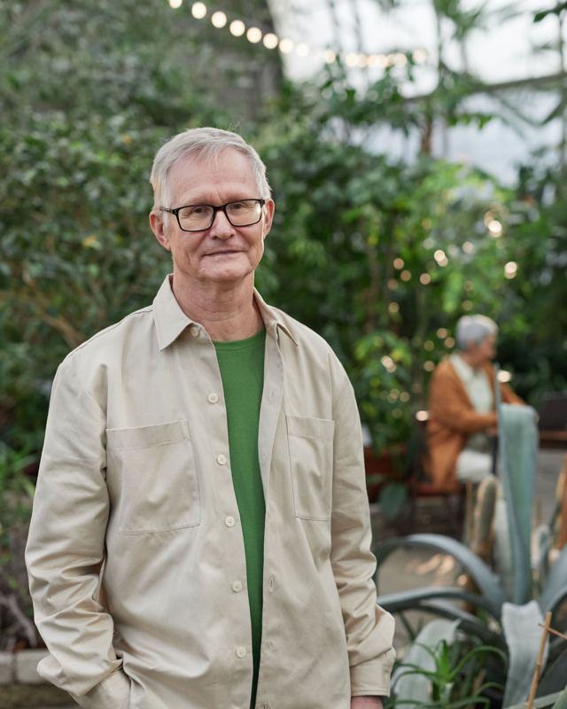

Reading
Historical books
Biographies and histories that bring the past into the present, the same stories I once shared with my students.
Hello, I am
A retired English Literature and History teacher, still reading, writing and sharing what I know.
Read my story
I taught English Literature and History for 42 years. I believe patience and discipline turn curious students into confident thinkers. Today I spend my time with books, gardens, chess boards and poems, and I still enjoy guiding young minds.
Biographies and histories that bring the past into the present, the same stories I once shared with my students.
Slow, patient work that rewards attention, much like teaching.
Seeing the places I taught about and learning from the people who live there.
A quiet game of strategy and foresight.
Writing poems, a craft I carried over from teaching literature.
Taught English Literature and History, and was known for wisdom, patience, discipline and dedication to education.
The foundation for a lifetime of teaching and guiding young generations.
Reading historical books, gardening, travelling, playing chess and writing poetry.